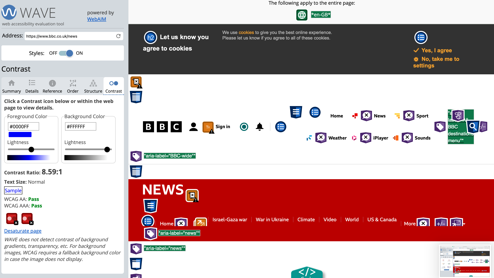
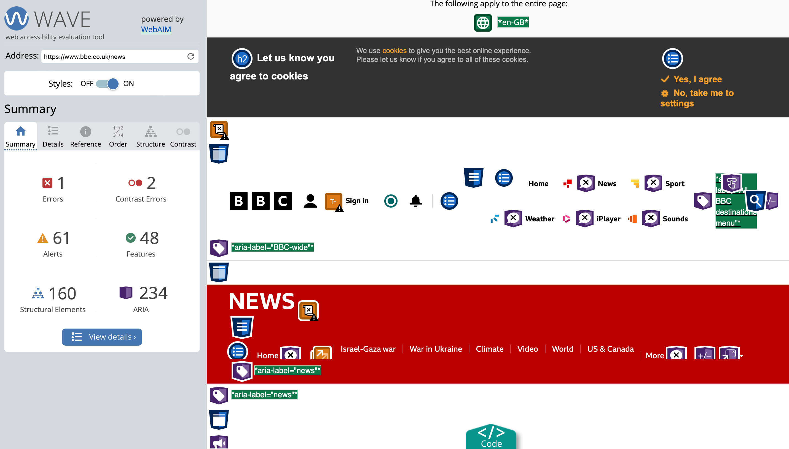
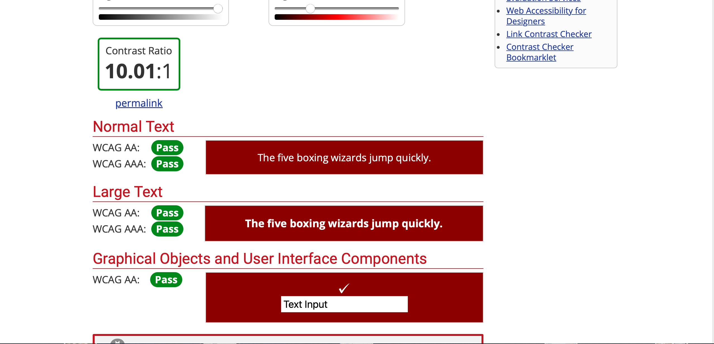
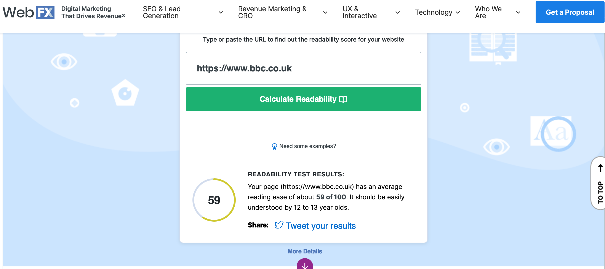
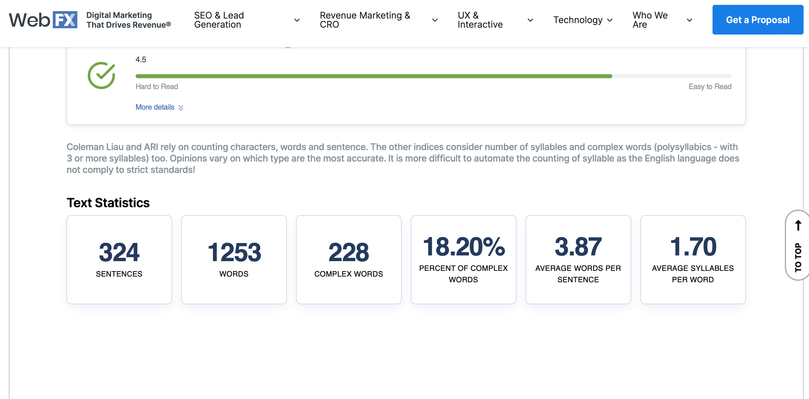

I want to create a website about the impact of Fake News and its real-life consequences. Essentially, I envision a website organized into sections, like the format of the 7 Deadly Sins website we discussed in Week 3. I want my website to consist of extensive information with regards to the most notorious fake news stories out there, as well as tips on how to spot fake news.
Week 10 - IL activity: Evaluating accessible design
Task 1: Evaluate websites against accessibility standards
WAVE Web Accessibility Evaluation Tool

In this image it is clear to see that the contrast ratio passess the standards set for testing. It passes as “Normal” which means that the text used on the website is easily readable for most users, even those with visual impairments. There are however some contrast errors which means that some elements on the website don’t have a good enough color contrast which won’t support users with poor vision or colour blindness.

This image shows that there are a few random errors on the website, one of them being a critical accessibility issue. There are more contrast errors but it is also clear that there are 48 features to help people navigate the webpage easily. There are also lots of HTML elements which will help with navigation purposes. There also seems to be many ARIA elements which enhances the accessibility for people who rely on assistive technology.
WebAIM Contrast Checker:

The image above shows a contrast ratio of 10.01:1 which means the colours have a high contrast ratio. It also makes it clear that the normal text, large text and graphical objects and user interface components all pass the test, most of them exceeding the nexessary contrast ratio. People with visual impairments would have no problem reading the text on this website.
Readability Test Tool:

From the image above it is clear to see that it has an average reading ease of about 59 of 100. It states that it should be easily understood by 12 to 13 year olds.
This result is quite good for BBC, as the content is accessible to a wide audience which is important for a news website that aims to inform many demographics who might have different reading abilities. The BBC is also a global news platform so they might have users who are not native english speakers, so this score also proves that people with a very basic proficiency in the English language would be able to understand the content.

These results show that there might be room for improvement in terms of lessening the amount of complex words and shortening the sentence lengths. This would make it easier for people to remain concentrated and informed.
Task 2: Accessibility Reflection
I believe that my website hits the mark for most of the accessibility requirements. From a visual design perspective, my website incorporates a clear, readable font that contrasts the background colour effectively. I researched which colours best contrast with each other and what colours are deemed as accessible before making any colour or font changes to my website. With the way my content is structured, I often make use of bullet points or tables to break up the lenghty paragraphs, making the content more digestible. I also use various headings to draw attention to important sections. I have centred all of my content and made sure my sentences all end at the same point so that it looks neat and easy to read. I also converted all of my tables that were originally images, into html tables so that people can highlight text if they want to change the layout format text to make it bigger or convert it to braille. My navigation is also very clear with the navigation bar being placed at the top of each webpage. I have incorporated multimedia elements that allow users to play, pause, increase or decrease volume and increase speed. I did user testing with a cousin of mine who is aged 19 and a friend who is aged 22 to test the website for accessibility and understanding of my content, and they both agreed that the content was easy to understand and the website was user-friendly with a good navigation. I think the areas for improvement could have been creating transcripts for my audio and video content, so that those multimedia elements are accessible to people with hearing disabilities. I also could have created a phone browser version of my website so that people who can only access it on phones, are able to do so without having any issues with the layout. According to the WebAIM million guidelines for accessibility, I reached all targets successfully. Therefore, upon reflection I believe that my website is accessible according to widely accepted guidelines.
Week 10 - Lab activity: Accessibility
I tried different variations of the WEBVTT file but unfortunately I was unable to get the expected result of subtitles.
Reflection On Moving Forward With Accessibility
I will improve by creating transcriptions by learning how to code them into HTML, so that on the side of the video, someone can follow along via reading. Alternatively, I need to learn how to code captions as this could serve a similar purpose properly. I will have to continue to practice and go through trial-and-error periods. I can do this by watching YouTube tutorials and reading more articles. Secondly, I could also read more articles on creating the ultimate accessible website, considering accessibility even in the smallest of decisions. Thirdly, I can add more images to my website to increase engagement and break up the text.